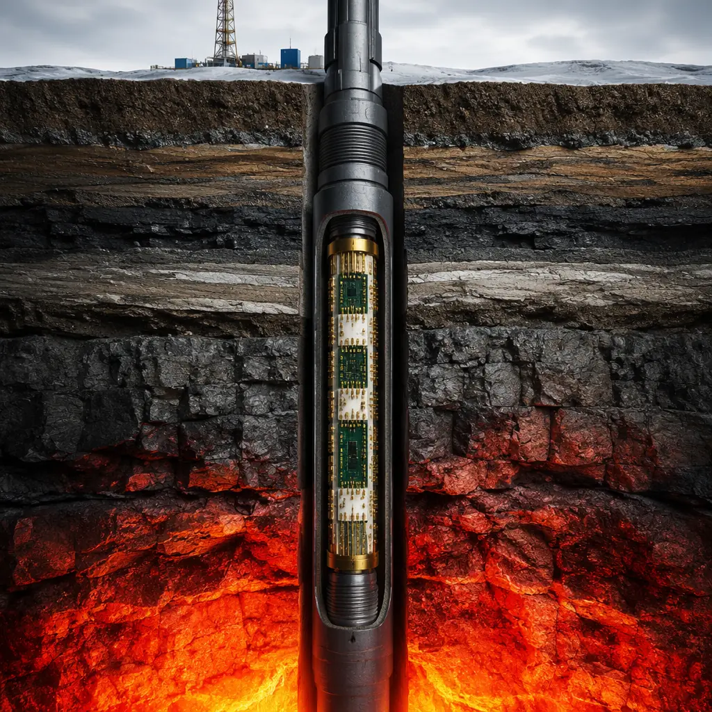
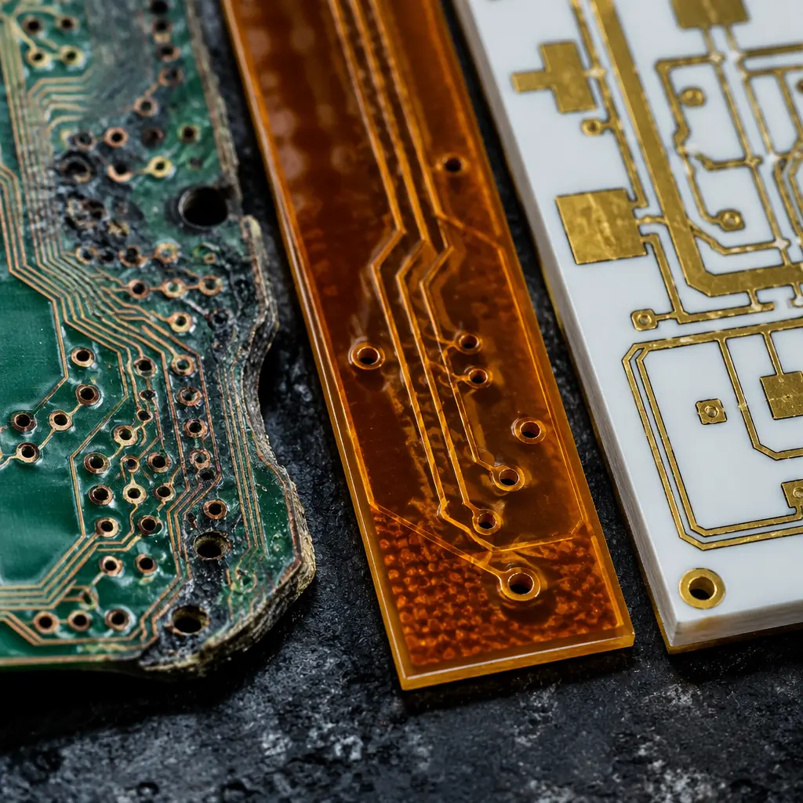
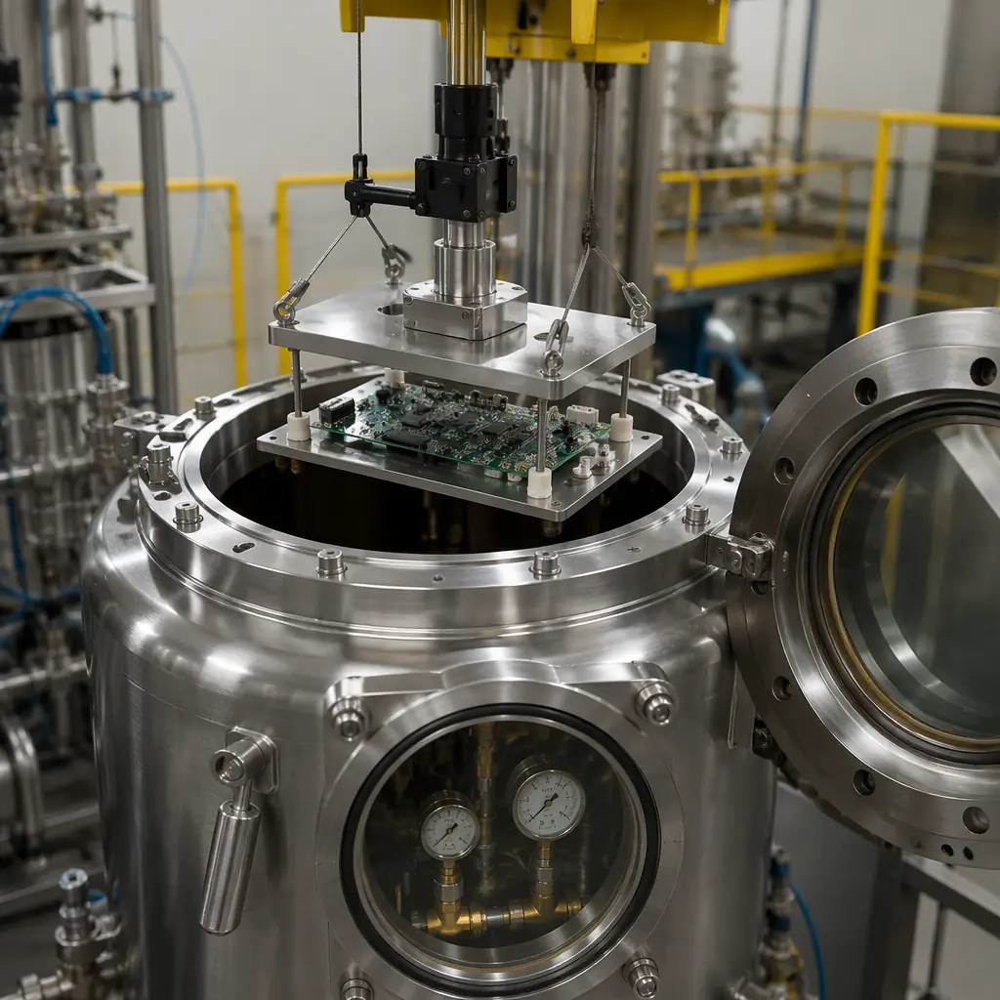

Downhole electronics represent the most punishing operating environment in all of electronics engineering — bar none. At 15,000 feet true vertical depth (TVD), a PCB inside an MWD (Measurement While Drilling) tool faces a thermal soak of 175–200°C that doesn't cycle — it's constant for the entire 200+ hour drilling run. Hydrostatic pressure from the mud column exceeds 20,000 psi. The vibration spectrum from a polycrystalline diamond compact (PDC) drill bit transmits 30G RMS of random vibration through the drill collar, with shock spikes reaching 500G. And in sour wells — common across the Middle East, the Permian Basin, and the Caspian — H₂S concentrations of 10–35% create a corrosive atmosphere that embrittles standard copper traces and dissolves unprotected solder joints in under 100 hours.
The failure cost is not measured in warranty returns. It's measured in $500,000–$2,000,000 per day of non-productive time when a BHA (Bottom Hole Assembly) must be tripped out of hole because a downhole PCB failed at 12,000 feet — three days into a five-day drilling run. This guide is written for the engineers and procurement managers who specify those boards: what materials actually work at 225°C, which design rules prevent thermal cycling delamination, how to protect against H₂S corrosion at the PCB level, and how to qualify a supplier whose process controls match the documentation burden that upstream oil and gas demands. At Huaxing PCBA, our Shenzhen facility produces downhole-grade PCBs on polyimide, ceramic, and PTFE substrates with 3/3mil trace/space, 6oz copper for power distribution, and ENEPIG surface finish — backed by IATF 16949, ISO 14001, and IPC Class 3 certifications.

The Downhole Environment: Why Standard PCBs Fail at 15,000 Feet
A standard FR-4 PCB with HASL finish and 1oz copper has a useful operating life measured in hours — not days — at downhole conditions. Understanding the specific failure mechanisms is the prerequisite to specifying the right board. Here are the four dominant failure modes that separate commercial-grade PCBs from downhole-qualified designs:
Thermal Decomposition of FR-4 at 175–225°C
FR-4 has a Tg (glass transition temperature) of 130–140°C for standard grades and 170–180°C for "high-Tg" variants. At 200°C — common in deep gas wells — standard FR-4 is 60°C above its Tg. The epoxy matrix softens, the Z-axis CTE jumps from ~50 ppm/°C below Tg to ~250 ppm/°C above Tg, and copper barrels inside plated through-holes experience tensile stress that cracks the plating within 50–100 thermal cycles. The fix: polyimide laminates (Tg ≥ 250°C, Td at 380–420°C) or ceramic substrates (alumina/Al₂O₃, aluminum nitride/AlN) with Tg values exceeding 1,000°C.
CTE Mismatch Between Copper and Laminate Under Thermal Ramp
Copper expands at ~17 ppm/°C. Above Tg, FR-4 expands at ~250 ppm/°C in the Z-axis. The differential expansion tears the copper barrel away from the laminate at the knee of every plated through-hole. In 200-cycle thermal shock testing (-65°C to +200°C, per IPC-TM-650 2.6.7.1), standard FR-4 boards show >10% resistance increase after 50 cycles; polyimide boards with matched CTE in X/Y (12–16 ppm/°C) show <5% resistance change after 500 cycles. This is why stackup design for downhole applications requires CTE matching across every layer, not just material selection at the outer layers.
Conductor Corrosion in H₂S-Rich Sour Gas Environments
Hydrogen sulfide (H₂S) at concentrations above 5% reacts with copper to form copper sulfide (Cu₂S), a non-conductive, friable layer that grows at ~0.5–2.0 μm/hour at 175°C. Unprotected copper traces on a 1oz board (35 μm thick) can be completely consumed in 18–70 hours. Silver-bearing surface finishes (immersion silver, HASL with silver-bearing solder) are particularly vulnerable — Ag₂S whisker growth can create dead shorts between adjacent pads. The solution: ENEPIG (Electroless Nickel, Electroless Palladium, Immersion Gold) with a minimum 0.05 μm palladium layer acting as a diffusion barrier, plus Parylene C conformal coating at 25 μm minimum thickness for complete hermeticity.
Vibration-Induced Pad Cratering at 30G+ RMS
PDC bit-induced vibration transmits broadband random vibration (10–2,000 Hz) at 30G RMS through the BHA. This energy concentrates at the solder joint-to-pad interface, causing pad cratering — a failure mode where the PCB laminate fractures beneath the pad, lifting the entire pad and solder joint off the board. The IPC-6012DS space and military addendum specifies a minimum pad pull strength of 2.5 N/mm²; for downhole, specify 4.0 N/mm² minimum with 2oz+ copper on outer layers to distribute mechanical stress across a larger anchor area.
Key takeaway: A downhole PCB is a materials engineering problem first, an electrical design problem second. The board that survives 200°C for 500 hours is the one where every material in the stack — laminate, prepreg, copper foil, solder mask, surface finish, and conformal coating — was selected for thermal and chemical compatibility at the target operating temperature. Do not let your fabricator default to "high-Tg FR-4" when your tool is rated for 200°C — high-Tg FR-4 at 200°C is still 20°C above its Tg. Specify polyimide or ceramic explicitly.
High-Temperature PCB Materials: Polyimide, Ceramic, and Beyond
Material selection for downhole PCBs is not a matter of "upgrading" from FR-4 — it requires evaluating completely different resin systems with fundamentally different thermal, mechanical, and RF properties. The following comparison maps the three material families that dominate downhole electronics and their appropriate application envelopes:
| Parameter | Polyimide (Arlon 85N / Isola P95) | Ceramic (Al₂O₃ 96%) | PTFE/Ceramic Composite (Rogers RO3003) |
|---|---|---|---|
| Tg / Max Operating Temp | 250°C Tg / 220°C continuous | 1,400°C / 400°C continuous | N/A (amorphous) / 180°C continuous |
| Z-axis CTE (ppm/°C) | 55 (below Tg) | 6–8 | 24 (X/Y/Z isotropic) |
| Dk @ 1 GHz | 3.8–4.2 | 9.8 | 3.0 ± 0.04 |
| Df @ 1 GHz | 0.015–0.020 | 0.0001–0.0004 | 0.0013 |
| Thermal conductivity (W/m·K) | 0.3–0.4 | 24–28 (Al₂O₃) / 170 (AlN) | 0.5 |
| Layer count capability | 2–32+ layers, standard PTH | 1–4 layers (HTCC/LTCC), no PTH | 2–20 layers, standard PTH |
| Relative cost (vs FR-4) | 8–15× | 20–50× | 10–25× |
| Best application | MWD/LWD main control boards, multi-layer sensor interfaces | High-temp front-end amplifiers, ignition-source electronics | EM telemetry transceivers, mud-pulse modulator drivers |
Polyimide is the workhorse of downhole electronics. It's the only organic substrate system that can reliably support multi-layer designs with plated through-hole vias at sustained 200°C operation. The trade-off is fabrication complexity: polyimide absorbs moisture (0.8–1.2% by weight vs. 0.1% for FR-4), requiring a 4–6 hour bake at 120°C before lamination and again before assembly to prevent delamination during reflow. At Huaxing PCBA, our polyimide process includes mandatory pre-lamination vacuum baking at 120°C for 6 hours with continuous dew point monitoring, validated by TMA (Thermomechanical Analysis) on every lot to confirm T260 (time to delamination at 260°C) exceeds 60 minutes.
Ceramic substrates (Al₂O₃ and AlN) solve the thermal conductivity problem — AlN at 170 W/m·K conducts heat 400× better than polyimide, making it the material of choice for power amplifier modules in EM (electromagnetic) telemetry transmitters that dissipate 15–30W in a <2-inch² footprint. The limitation is layer count: HTCC (High-Temperature Co-Fired Ceramic) is typically limited to 4 layers, and plated through-holes in ceramic require a completely different metallization process (tungsten paste co-firing at 1,600°C) than organic PCB fabrication. For the 8–12 layer control boards common in modern MWD tools, ceramic is not a viable option — polyimide remains the practical choice.
PTFE/ceramic composites like the Rogers RO3000 series fill a specific niche: RF telemetry boards where signal integrity over 10,000-foot wireline cables demands Dk of 3.0 ± 0.04 and Df of 0.0013. The low loss tangent means a 2.4 GHz mud-pulse telemetry signal experiences 0.13 dB/inch of insertion loss on RO3003 vs. 0.45 dB/inch on polyimide — a 3.5× improvement that can mean the difference between decoding a 4-QAM signal and losing lock entirely at the surface receiver. See our RF PCB design and manufacturing guide for the full dielectric selection framework.

Design Rules for Downhole Reliability
Material selection is the foundation — but design rules translate material capability into field reliability. The following parameters are not recommendations; they are the minimum survivability thresholds observed across 15+ downhole PCB programs that achieved >1,000 hours of operation at 200°C:
Copper Weight: 2oz Outer / 1oz Inner Minimum
Outer layers at 2oz (70 μm) provide mechanical anchoring for SMT pads under high-G vibration. Inner layers at 1oz (35 μm) minimum are required because current-carrying capacity derates at elevated temperatures — ampacity at 200°C is approximately 60% of the room-temperature rating due to increased conductor resistance (copper TCR is 0.00393/°C). For power distribution planes carrying >10A, specify 3–6oz copper with thermal relief spoke design to prevent barrel cracking during soldering.
Via Aspect Ratio: 6:1 Maximum (Not IPC Standard 10:1)
IPC-6012 allows 10:1 aspect ratio for Class 3, but at 200°C with polyimide's higher Z-axis CTE, the stress on a 10:1 via barrel increases by ~40% compared to a 6:1 via due to the longer lever arm of differential expansion. Specify 6:1 maximum (e.g., 0.25mm finished hole diameter for a 1.5mm board) and require cross-section micrographs of at least 3 vias per panel at first article. See our via technology guide for the full analysis of aspect ratio effects on downhole reliability.
Annular Ring: 0.15mm Minimum (Not IPC Class 3 0.05mm)
The IPC Class 3 minimum annular ring of 0.05mm assumes a stable laminate with low Z-CTE. On polyimide at 200°C, the pad-to-hole registration must accommodate both the fabrication tolerance and the additional 25–40 μm of differential expansion between copper and laminate during thermal soak. A 0.15mm minimum annular ring provides a 3× safety margin. This directly impacts DFM considerations — pad diameters on 0.25mm finished holes should be 0.55mm minimum, not the 0.35mm that IPC Class 3 would technically permit.
Pad Design: Rounded Rectangles for QFN/QFP, Not Square
Square pads concentrate thermal stress at the corners, where CTE mismatch initiates micro-cracking that propagates into pad cratering. Rounded rectangle pads (radius ≥ 0.15mm at corners) distribute thermal strain uniformly. For QFN thermal pads, use a 3×3 or 4×4 grid of small vias (0.2mm) with dog-bone thermal relief rather than a single large center via — this maintains solder joint integrity through 1,000+ thermal cycles from ambient to 200°C.
Solder Mask: High-Temperature LPI, 25μm Minimum Over Bare Copper
Standard liquid photoimageable (LPI) solder mask decomposes above 160°C, turning brittle and losing adhesion. Specify high-temperature LPI rated for 220°C continuous (Taiyo PSR-4000 AUS5 or equivalent), applied at 25 μm minimum thickness over bare copper traces to maintain dielectric integrity at elevated temperature. The solder mask selection guide covers the full material comparison for extreme-temperature applications.
Procurement reality: These design rules increase PCB cost by 25–40% compared to an IPC Class 3 board on high-Tg FR-4. That 25–40% buys you a board that survives 1,000 hours at temperature vs. one that fails at hour 73. When the cost of tripping out of hole is $500K–$2M per day, the math is not complicated. The qualifying question for your PCB supplier is not "can you build to Class 3" — it's "do you understand the specific failure modes that Class 3 alone doesn't prevent, and do you have the in-house polyimide process control to address them?"
Hermetic Sealing and Conformal Coating for Sour Gas Environments
Conformal coating is not optional for sour service PCBs — it is the last line of defense between H₂S and the copper that carries your signals. But coating selection requires understanding the specific permeation mechanisms of each H₂S species through each coating chemistry:
| Coating Type | Application Method | H₂S Permeation Rate at 200°C (g·mm/m²·day) | CTE Match to Polyimide | Repairability | Best For |
|---|---|---|---|---|---|
| Parylene C | Vacuum deposition (CVD) | 0.02–0.05 | Good (35 ppm/°C) | No — must be mechanically removed | Full hermetic seal for high-H₂S (>10%) wells |
| Silicone (SR) | Spray / dip / brush | 8–15 | Excellent (250 ppm/°C, but compliant) | Yes — peelable / solder-through | Moderate-H₂S (2–10%) with vibration dampening |
| Epoxy (ER) | Spray / dip | 0.5–2.0 | Poor (45 ppm/°C, rigid) | No — must be burned off | Wellhead electronics, surface equipment |
| Parylene HT | Vacuum deposition (CVD) | 0.01–0.03 | Excellent (36 ppm/°C) | No | 225°C+ applications, Parylene C replacement |
Parylene C is the gold standard for downhole hermetic sealing. Applied via chemical vapor deposition (CVD) at room temperature in a vacuum chamber, it forms a pinhole-free conformal film at 12.5–25 μm thickness that penetrates under components and into sub-millimeter gaps. The CVD process is capital-intensive — a mid-size Parylene deposition system costs $150K–$300K — which is why many PCB fabricators subcontract conformal coating. At Huaxing PCBA, we offer in-house Parylene C application with thickness verification via eddy-current measurement on every board, not sample-based coupon testing.
The critical parameter for sour gas protection is coating continuity, not thickness. A 25 μm Parylene C coating with a single 5 μm pinhole will fail in H₂S service faster than a perfectly continuous 12.5 μm coating, because the pinhole concentrates the corrosion attack into a localized galvanic cell. Specify 100% continuity testing using a high-voltage holiday detector (per ASTM D5162) at 500V minimum, scanned across the entire board surface. For silicone and epoxy coatings, the practical H₂S protection window is more limited — see our complete conformal coating guide for application-specific selection criteria.
Field data point: A major oilfield services company documented 47 downhole PCB failures across 320 runs in a sour gas field (15–22% H₂S at 185°C). Post-mortem analysis identified the root cause in 41 of 47 cases (87%) as H₂S ingress through conformal coating pinholes, not bulk permeation. The corrective action — adding mandatory 500V holiday detection to the incoming inspection spec — reduced failures to 2 in the next 180 runs (1.1%). The lesson: coating material selection matters, but coating continuity verification matters more.

Signal Integrity Over 10,000-Foot Cables: Wireline Telemetry Challenges
Wireline logging tools communicate with surface acquisition systems over mono-cable or multi-conductor armored cable up to 35,000 feet long. The electrical model of this cable — distributed RLCG parameters at 200°C — creates signal integrity challenges that are fundamentally different from standard PCB-level impedance control:
Cable Impedance Is Temperature-Dependent and Non-Uniform
A 7-conductor wireline cable has a characteristic impedance of 45–55Ω at surface temperature (25°C). As the cable descends through the geothermal gradient — 25°C at surface, 200°C at 15,000 feet — the impedance shifts by 8–12% due to temperature-dependent changes in dielectric constant and conductor resistance. The downhole telemetry PCB must include a programmable output impedance matching network that can compensate for this gradient, not a fixed 50Ω driver. Impedance control at the board level is necessary but insufficient — the system-level impedance match to the cable must be characterized at temperature.
Mud Pulse Telemetry: Low Data Rates Need Clean Switching, Not High Bandwidth
Mud pulse telemetry operates at 0.5–40 bits/second — truly low-speed digital. The PCB challenge is not signal integrity in the GHz sense; it's clean, bounce-free switching of the solenoid valve that generates pressure pulses in the drilling mud column. The solenoid driver stage typically switches 24–48V at 3–5A with a 50ms pulse width. The key PCB requirements: 4oz copper for the driver traces (to handle 5A at 200°C without excessive I²R heating), a flyback diode with <25ns reverse recovery time placed within 5mm of the solenoid connector, and a ground plane split that isolates the noisy solenoid return current path from the sensitive analog front-end ground. For EM telemetry transceivers — which transmit at 2–12 Hz through the formation — the PCB demands are different, requiring low-noise amplifier design with sub-nV/√Hz input-referred noise on polyimide substrate.
Power Delivery: The Voltage Drop at 35,000 Feet Is Not Trivial
A 35,000-foot mono-cable with 18 AWG conductor (6.4Ω/1,000ft at 25°C → 9.9Ω/1,000ft at 200°C) has a round-trip resistance of ~700Ω. A downhole tool drawing 150W at 200VDC surface voltage sees only ~160V at the tool due to cable IR drop. The PCB power supply must accept a wide input voltage range (140–220VDC) and regulate efficiently at 200°C ambient — typically requiring a synchronous buck topology with GaN FETs rated for 225°C junction temperature. The input filter capacitors must be rated for 250V minimum with X7R or C0G dielectric — aluminum electrolytics will not survive the temperature.
Testing: Beyond IPC Class 3 — What the Oilfield Actually Requires
IPC Class 3 testing — thermal shock (IPC-TM-650 2.6.7.1), ionic contamination (2.3.25), microsection (2.1.1) — establishes a manufacturing quality baseline. Oilfield qualification goes beyond this into reliability demonstration under simulated downhole conditions. These are the test protocols that major service companies (Schlumberger, Halliburton, Baker Hughes) include in their PCB procurement specifications:
175°C Powered Burn-In — 168 Hours Minimum
The assembled PCB is powered and operating at nominal voltage at 175°C ambient for 168 continuous hours (7 days). Functional testing is performed every 24 hours — not just at the beginning and end. Acceptance criteria: zero functional failures, zero parametric drift >5% on any monitored parameter (voltage rails, oscillator frequency, ADC noise floor). This test screens for infant mortality in active components and early-life delamination in the PCB itself. Many programs extend this to 500 hours for qualification lots. For the burn-in methodology, see our PCB testing methods guide.
HALT — Highly Accelerated Life Test: Combined Temperature + Vibration
HALT subjects the powered PCB to simultaneous temperature extremes (-65°C to +200°C, 60°C/min ramp rate) and 6-degree-of-freedom random vibration (5–50 Grms, 10–10,000 Hz). The test continues until failure — the objective is to identify the weakest failure mode, not to pass a fixed-duration test. For downhole PCBs, the first failure typically occurs at the solder joint-to-pad interface at 30–50 Grms; redesigns that push this threshold above 70 Grms are considered robust. HALT is a design validation tool, not a production screen, and costs $15K–$30K per run — but it's mandatory for new MWD tool qualification at every major service company.
Autoclave Testing at 200°C / 20,000 psi with H₂S
The gold standard for downhole environmental qualification. A conformally coated PCB assembly is placed in a pressurized autoclave vessel at 200°C, 20,000 psi (1,379 bar), with a gas mixture containing 15–20% H₂S, 5–8% CO₂, 2–3% H₂O vapor, balanced with N₂. The board is unpowered (passive exposure) for 96 hours, then functionally tested. Acceptance: no corrosion visible at 40× magnification, <1% resistance change on any net, no delamination on cross-section. This test costs $25K–$45K per run at independent labs (e.g., Southwest Research Institute, Intertek) and is typically required once per board design, not per production lot.
85/85/85 THB with H₂S — The Accelerated Life Test
85°C / 85% RH / 85V bias (standard THB per IPC-TM-650 2.6.14.1) is insufficient for oilfield qualification. The downhole variant runs at 85°C / 85% RH with 100 ppm H₂S in the chamber atmosphere and 85V DC bias applied to adjacent traces with 0.15mm spacing (the minimum design rule). Duration: 1,000 hours, with insulation resistance measured every 100 hours. Drop below 10⁸ Ω on any channel = fail. This test specifically validates the conformal coating's ability to prevent electrochemical migration (ECM) in the presence of H₂S, which accelerates dendrite growth by 50–200× compared to clean humidity.
| Test | IPC Class 3 Requirement | Oilfield Requirement | Delta |
|---|---|---|---|
| Thermal Shock | -65°C to +125°C, 100 cycles | -65°C to +200°C, 500 cycles | +75°C, 5× cycles |
| Burn-In | Not required | 175°C, powered, 168 hours | Entirely new requirement |
| Conformal Coating Inspection | Visual at 10× | 500V holiday detection, 100% coverage, plus visual at 40× | Electrical continuity verification |
| Ionic Contamination | ≤1.56 μg/cm² NaCl equivalent | ≤0.80 μg/cm² NaCl equivalent | 2× tighter |
| Microsection | 1 coupon per panel, 2 sections | 3 coupons per panel (edge + center), 3 sections each | 3× sampling, center coupon added |
How to Qualify a PCB Supplier for Oil & Gas Applications
Selecting a PCB supplier for downhole electronics is not the same process as selecting one for industrial control or even automotive — the failure consequence and qualification burden are an order of magnitude higher. Here are the seven questions that separate suppliers who can talk about downhole capability from suppliers who have actually delivered it:
Do you have in-house polyimide lamination capability, or do you outsource it?
Polyimide lamination requires different press cycle parameters (higher temperature, longer dwell, tighter moisture control) than FR-4. Suppliers who outsource polyimide fabrication lose traceability and process control at the most critical step. The correct answer includes specific lamination parameters: "We laminate polyimide in-house at 220°C, 350 PSI, with 60-minute dwell and pre-lamination vacuum bake at 120°C for 6 hours. Every lot receives TMA for Tg verification and T260 measurement."
What is your documented CTE control range for polyimide, lot-to-lot?
Acceptable answer: "X/Y CTE 12–16 ppm/°C, Z-axis CTE 45–55 ppm/°C below Tg, verified by TMA on every laminate lot. We reject any lot outside this window." Unacceptable answer: "Polyimide has low CTE — it's fine." CTE data should be traceable to the laminate lot number on the Certificate of Conformance.
Can you provide ENEPIG surface finish with minimum 0.05 μm palladium thickness — and verify it?
ENEPIG is the required surface finish for sour gas environments because the palladium layer blocks copper diffusion and provides a solderable surface that won't form sulfides. The 0.05 μm minimum is the IPC-4556 Class 2 requirement, but thickness must be verified by XRF on every panel, not sample-based. See our ENIG vs. HASL surface finish comparison for the full selection framework.
What is your conformal coating continuity verification process for Parylene?
The supplier must have holiday detection capability (high-voltage spark testing) and apply it to 100% of boards, not a sample. Target: 500V test voltage, no arcing or current leakage above 10 μA at any point on the coated surface. If the supplier responds "we visually inspect the coating," they don't understand the failure mode. Review our conformal coating guide for the testing checklist to provide to your supplier.
Do you maintain full lot traceability from laminate mill certificate through finished board serial number?
Oil and gas operators require cradle-to-grave traceability for every PCB that goes downhole. If a laminate lot is later found to have a manufacturing defect, every board built from that lot must be identifiable by serial number and quarantined. This is an IATF 16949 requirement adapted to oilfield service — and our facility maintains this traceability as standard practice across all production. For the full supplier audit framework, see our PCB supplier audit checklist.
What is your rework policy for ENEPIG/Parylene boards that fail electrical test?
Reworking a Parylene-coated ENEPIG board essentially means stripping the coating, performing the rework, and re-coating — a process that adds cost and introduces new failure modes (residual coating in vias, incomplete re-coating at edges). The supplier should demonstrate a documented rework procedure with validation data. Better answer: "Our first-pass yield on downhole-grade boards is >97%, so rework is rare, but here's the documented procedure when it's necessary."
Can you provide references from other oilfield service customers?
The PCB industry has a long tail of suppliers who claim capability but have never actually shipped a board that went downhole. A supplier with genuine oil and gas experience will have references they can share — even if NDAs prevent naming the specific service company, they should be able to describe the application (MWD tool, wireline sonde, ESP motor drive), the operating environment (temperature, pressure, H₂S concentration), and the production volume without violating confidentiality. If the answer is "we can build to any spec," with no domain-specific detail, probe harder. Our supplier audit guide includes the full 15-point checklist used by procurement teams evaluating PCB partners for critical applications.
Procurement insight: The cost of qualifying a new PCB supplier for downhole electronics — including the three qualification lot builds, HALT testing, autoclave testing, and documentation review — typically runs $80K–$150K and takes 6–12 months. Switching suppliers because the current one missed a delivery date or had a price increase is not a trivial decision; the switching cost eclipses any per-board price difference. This is why the supplier qualification process for oil and gas emphasizes long-term partnership, process stability, and documented quality systems — attributes that Huaxing PCBA has demonstrated through IATF 16949, ISO 14001, and UL certifications maintained across 15+ years of continuous PCB manufacturing.